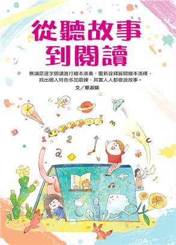

指標深度解析
教育公平性
消除教育資源的城鄉差距，確保身心障礙者、弱勢境遇兒童都能平等接受各階層教育與職業訓練。
終身學習力
建立持續更新專業技能的能力，以適應快速變遷的社會需求，讓學習不侷限於校園空間。
全球公民意識
培養具備永續發展、人權、性別平等意識的人才，厚植解決全球挑戰的軟實力。
精選館藏圖書 (Books)

從聽故事到閱讀
索書號：523.1 8469 2018
分享親子共讀與閱讀技巧，打造溫暖美好的閱讀時光。